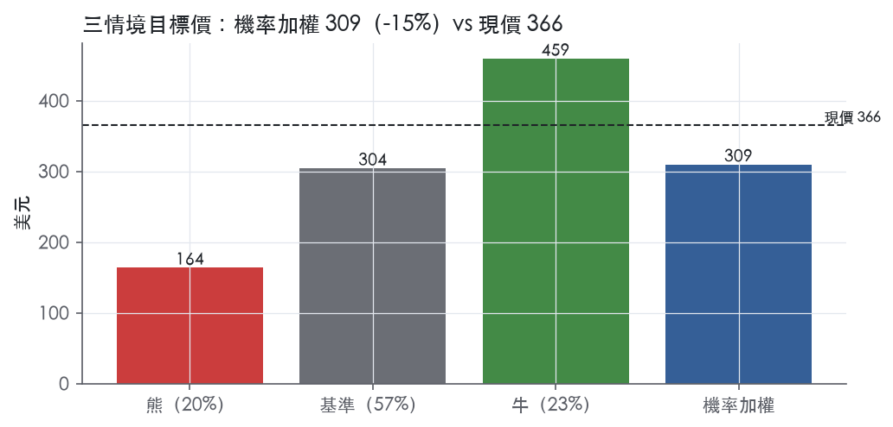
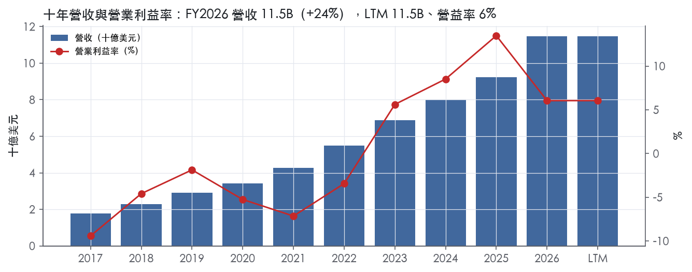
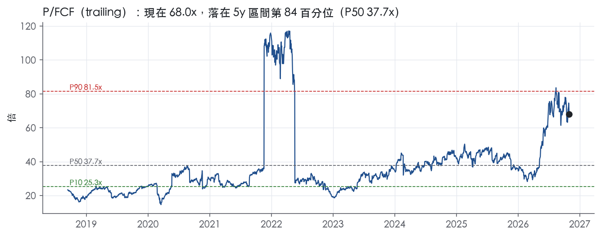
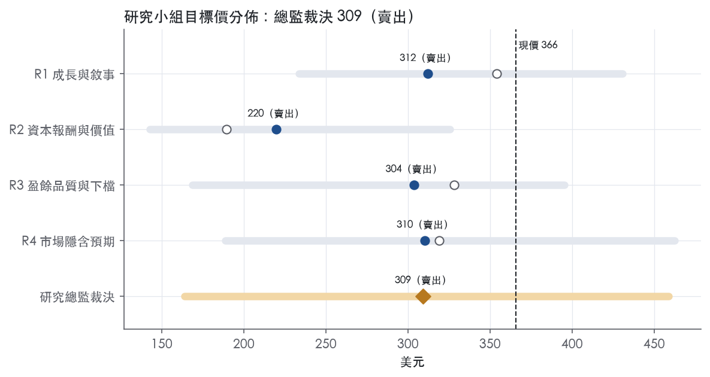
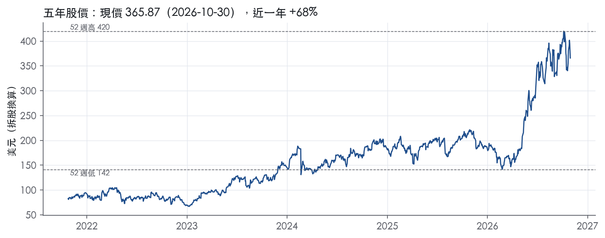

評等總表 › 資訊科技 › PANW
成長如指引、倍數回歸，看空｜評等 賣出｜目標價 309
| 報告日 | 評等 | 目標價 | 當時股價 | 超額報酬 |
|---|---|---|---|---|
| 2026-10-30 | 賣出 | 309 | 366 | -25.4% |
| 評等 | 賣出 |
| 12 個月目標價 | 309 美元 |
| 現價 | 365.87 美元（2026-10-30） |
| 預期報酬 | 股價 -15.5%＋股息 0.0%＝總報酬 -15.5%；同業籃門檻 10.0%，超額 -25.4% |
| 估值方法 | P/FCF 55.0x，套在第 5–8 季的自由現金流（也就是一年後的未來四季） |
| 三情境 | 熊 164／基準 304／牛 459 |
| 研究流程 | 四位研究員兩輪辯論＋研究總監裁決 |
| 資料來源 | SEC EDGAR XBRL、Tiingo、FRED（全免費） |
成長如指引、倍數回歸，看空（研究總監裁決，四位研究員兩輪辯論後）
評等 賣出｜12 個月目標價 309 美元（總監三情境機率加權 312 與研究員中位數 307 各半）｜現價 365.87（2026-10-30）
預期報酬：股價 -15.5%＋股息 0.0%＝總報酬 -15.5%。同業籃門檻 10.0%，超額 -25.4%。
估值方法：P/FCF 55.0x，套在第 5–8 季的自由現金流（也就是一年後的未來四季）。三情境：熊 164（20%）／基準 304（57%）／牛 459（23%）。
什麼會讓研究總監改變看法：FY2027Q1與Q2 NGS ARR皆高於指引上緣且全年ARR指引上調到25%以上，加上FY27Q3財報後trailing P/FCF仍在60x以上，我會把倍數上移到65x以上並轉中性；反之FY27Q2下修全年指引則熊機率上調。
| 過去四季（實際，FY2026Q4） | 未來四季 | 第 5–8 季 | 第 9–12 季 | |
|---|---|---|---|---|
| 營收（B） | 11.5B | 14.2B | 16.5B | 18.5B |
| 營收成長 | 24.5% | 24.0% | 16.0% | 12.0% |
| 營業利益率 | 6.1% | 8.0% | 10.5% | 12.5% |
| EPS（美元） | 0.49 | 1.04 | 1.54 | 2.00 |
| EPS 成長 | -69.3% | 112.6% | 47.8% | 29.4% |
| 每股股息（美元） | — | 0.00 | 0.00 | 0.00 |
| P/E（現價） | 745.3x | 350.6x | 237.2x | 183.2x |
| 股息殖利率（現價） | — | — | — | — |
過去四季為申報數字；預測為研究總監的假設、程式計算。倍數與殖利率都用現價計算，用來看現價對應各期獲利的高低。
| 情境 | 機率（歷史） | 故事 | 未來四季營收成長 | 第 5–8 季營益率 | 倍數 | 目標價 | 股價漲跌 |
|---|---|---|---|---|---|---|---|
| 熊 | 20%（12%） | 風險表第3條（CyberArk等整合失速與身分安全競爭，10-K FY2026 Item 1A新增條款）引爆第1條倍數重評，FY27Q2下修指引，扣口徑後倍數回前瞻帶中段，稀釋回到十年結構水準4% | 20.0% | 7.0% | 36.0x | 164 | -55.3% |
| 基準 | 57%（66%） | FY27指引達標，下半年帳面成長降至15–17%，FY28指引中點約16%，倍數回到同業持平水位 | 24.0% | 10.5% | 55.0x | 304 | -16.9% |
| 牛 | 23%（22%） | AI安全需求使併表基期消化後有機NGS ARR仍高於指引上緣23%，FY26Q4超標延續，市場續付現行倍數附近 | 25.0% | 13.0% | 75.0x | 459 | 25.4% |
目標價由程式依研究總監的驅動與倍數計算；機率由研究總監給定。括號內是歷史頻率：把這檔股票過去十年 12 個月報酬的波動形狀，置中在基準情境，結果落在各情境附近的比例。

四位研究員用不同方法各自估值，回應研究總監的質疑後交出第二輪，最後由總監逐點裁決。各研究員的主張見第七章，裁決理由見第八章，完整論證見《研究底稿》。
| 立場（一輪→二輪） | 加權目標價（一輪→二輪） | 評等（一輪→二輪） | 第二輪倍數 | 熊～牛目標價 | |
|---|---|---|---|---|---|
| R1 成長與敘事 | 中性→看空 | 354→312 | 減碼→賣出 | 18.0x | 234～431 |
| R2 資本報酬與價值 | 看空→看空 | 190→220 | 賣出→賣出 | 47.0x | 143～326 |
| R3 盈餘品質與下檔 | 看空→看空 | 328→304 | 賣出→賣出 | 52.0x | 169～395 |
| R4 市場隱含預期 | 看空→看空 | 319→310 | 賣出→賣出 | 55.0x | 189～463 |
| 研究總監裁決 | 看空 | 309 | 賣出 | 55.0x | 164～459 |
目標價由程式依各自的驅動與倍數計算；評等＝機率加權總報酬 − 同業籃門檻。
Palo Alto Networks 是一家全球 AI 網路安全供應商，透過平台化策略整合網路安全、雲端安全、安全維運與身分安全¹。公司成立於 2005 年，總部位於加州聖塔克拉拉¹。客戶為企業、服務供應商與政府機關，涵蓋教育、能源、金融服務、醫療、電信等多個產業，FY2024、FY2025、FY2026 均無單一客戶佔總營收超過 10%¹。FY2026 LTM 營收 11.48B，是一家已從純防火牆廠商轉型為多平台訂閱型安全公司的供應商。
公司產品線分為三大平台：Network & AI Security、Cortex、Idira，外加 Threat Intelligence and Advisory Services¹。Network & AI Security 涵蓋 SASE（Prisma Access、Prisma SD-WAN）、下一代防火牆（NGFW，硬體、CN-Series、VM-Series）、雲端交付安全服務（CDSS）與新推出的 Prisma AIRS AI 安全平台¹。Cortex 平台整合安全維運（Cortex XSIAM、XDR、XSOAR、Xpanse）、雲端安全（Cortex Cloud）與透過收購 Chronosphere 新增的可觀測性能力¹。Idira 是公司透過收購 CyberArk 組成的下一代身分安全平台，涵蓋特權存取管理（PAM）、身分與存取管理（IAM）、身分治理與機器身分安全¹。10-K 未揭露各平台個別佔總營收比重的具體數字，但公司以「Next-Generation Security ARR」（NGS ARR）作為訂閱業務規模指標，FY2026Q4 達 9.10B 年增 63%（相關）²。公司持續以併購擴充產品線：FY2026 內完成 Chronosphere（觀測性）、CyberArk（身分安全）、Koi（端點韌性）、Portkey（AI Gateway）收購，並已簽約收購 Embrace（RUM）與 Console（AI 原生代理工作流）¹。公司的策略核心是「平台化」——將分散的點產品整合進緊密架構的平台，以換取更安全、更快、更具成本效益的結果¹。
銷售主要透過兩層間接銷售模式，公司賣給經銷商，再由經銷商賣給轉售商，最終觸及終端客戶¹。FY2026 總營收的 30% 來自兩家經銷商¹。VM-Series 虛擬防火牆與 Cloud NGFW 也透過 AWS、Azure、Google Cloud、Oracle Cloud 等雲端市集銷售，採用量計價模式¹。截至 2026 年 7 月 31 日，公司有超過 8,700 個通路夥伴，透過 NextWave Channel Partner 計畫經營¹。10-K 未揭露具體地區營收分佈比重。
FY2026Q1（截至 2025-10-31）營收 2.47B，年增 15.7%，營益率回升至 12.5%（等資料包欄位）【判，資料來自資料包】。FY2026Q2（截至 2026-01-31）營收 2.59B，年增 14.9%，營益率 15.3%，為近八季最佳水準之一（資料包）。FY2026Q3（截至 2026-04-30）營收因納入 CyberArk 與 Chronosphere 併購跳升至 3.0B，年增 31%，其中 388M 來自 CyberArk 與 Chronosphere³；GAAP 營運轉虧 183M，主因併購相關費用與攤銷，但 Non-GAAP 營運利益仍成長至 814M³；公司對 FY2026Q4 給出指引：總營收 3.345B–3.355B、年增 32%³。FY2026Q4（截至 2026-07-31）總營收實際年增 34% 至 3.41B，單季新增近 1B 的 Net New NGS ARR²；NGS ARR 年增 63% 至 9.10B，剩餘履約義務（RPO）年增 34% 至 21.2B²；GAAP 營運利益僅 172M（去年同期 497M），Non-GAAP 營運利益則成長至 1.0B（去年同期 768M）²；GAAP 由盈轉虧，淨損 282M，每股 -0.35 美元，Non-GAAP 淨利 853M，每股 1.02 美元²；全年調整後自由現金流利潤率達 38.4%²。公司對 FY2027Q1 指引總營收 3.300B–3.310B、年增 33–34%，全年 FY2027 指引總營收 14.10B–14.20B、年增 23–24%，Non-GAAP 營運利潤率 29.5%，調整後自由現金流利潤率 38.0%²。
CEO Nikesh Arora 表示，AI 的最新進展正把網路安全推上 CIO 優先清單首位，將成為公司邁向 FY30 達成 200 億美元 NGS ARR 目標的持久順風²。CFO Dipak Golechha 指出，公司獲利成長框架持續有效擴張，強化對 FY28 達成 40% 調整後自由現金流利潤率的信心²。公司的研發策略聚焦於以 AI 驅動創新擴大在企業安全產業的領導地位，FY2026 推出 PAN-OS 12.1 Orion、Prisma AIRS 2.0／3.0、NGTS 等升級¹。併購策略明確定位為補充自身研發、加速平台布局，評估標準包括能否加速策略、具吸引力的客戶機會、對齊客戶基礎與市場通路、以及清晰的價值增值路徑¹。Q3 財報並強調「organic bookings growth accelerating as customers turn to us to secure their AI deployments at scale」，顯示公司將 AI 安全需求視為核心成長動能³。整體來看，公司正從「賣防火牆」轉向「賣平台訂閱＋併購堆出的身分與觀測性能力」，FY2026 營收成長的主要驅動力已明顯轉為非自然成長（CyberArk、Chronosphere 併表貢獻）疊加 AI 安全需求。短期 GAAP 獲利能力因併購整合費用與股權稀釋波動劇烈，但 Non-GAAP 營運利益與 NGS ARR 的趨勢顯示訂閱轉換持續推進。投資人應關注 FY2027 的 NGS ARR 與 RPO 成長是否能延續 Q4 的加速軌跡，以檢驗平台化與併購整合的實際變現能力。

Palo Alto Networks 的護城河評為窄，趨勢變窄。護城河的主體是平台化帶來的轉換成本，足以支撐未來 5 年以上的定價力，但撐不起「10 年以上 ROIC 高於資本成本」的判斷。評級沒有給寬，也把趨勢列為變窄，原因有三點：ROIC 十年平均為 -3.1%，低於資本成本代理值 10.0%；FY2026 ROIC 只有 3.1%；FY2026 的平台廣度主要靠併購取得，不是自己建出來的。
轉換成本是主要來源，無形資產只是次要來源。
轉換成本（主）
無形資產（次要）
數字只支持一半的主張：毛利率支持，ROIC 與窄評級有衝突。
毛利率：支持定價力
現金流：品質要打折
ROIC：與主張衝突
為什麼仍維持窄
最大的威脅是大型平台的綑綁銷售，其次是公司對併購的依賴。
大型平台綑綁
併購依賴
智慧財產訴訟
目標倍數相對同業應持平，不給溢價。理由是護城河只有窄，ROIC 尚未回到資本成本之上；而目前 EV/Sales 為 24.1x（資料包倍數帶表），已遠高於 5 年中位數 13.9x。超額報酬的持續期假設以 5 年為上限；要等 FY2027 至 FY2028 的 ROIC 回到 10.0% 以上，才重新評估是否給溢價。
| 指標 | 最新 | 十年平均 | 標準差 | 最低 | 最高 |
|---|---|---|---|---|---|
| ROIC | 3.1% | -3.1% | 55.7% | -96.0% | 98.5% |
| 毛利率 | 70.4% | 71.6% | 1.6% | 68.8% | 74.3% |
| 營業利益率 | 6.1% | 0.2% | 7.3% | -9.4% | 13.5% |
| FCF 利潤率 | 35.8% | 35.2% | 4.8% | 24.1% | 40.7% |
| ROE | 1.7% | -2.3% | 41.8% | -63.2% | 74.5% |
程式計算。資本成本代理值（10 年債＋5%）：10.0%；ROIC 平均減資本成本：-13.1%；ROIC 有資料的 9 年中，高於資本成本 4 年。
LTM營業現金流／淨利達14.8倍、自由現金流／淨利達13.4倍，兩項皆為綠燈，顯示現金遠遠跑在GAAP淨利前面。這個「超高倍數」本身不是好消息的全部，而是因為LTM GAAP淨利只有0.31B美元，分母被SBC、併購攤銷與可轉債公允價值變動壓得很低，不是因為現金流特別強。十年平均CFO／淨利為-1.43倍、FCF／淨利為-1.13倍，呈現負值是因為過去多個年度GAAP淨利為負（FY2017至FY2022多年虧損）而現金流一路為正，比率在算術上失真，不代表現金品質差。應計比率LTM為-9.0%、近三年-9.2%、十年平均-16.1%，全部優於0%的綠燈門檻，代表淨利長期低於而非高於經營性現金流，這是現金品質的正面訊號。整體看，現金轉換沒有問題，問題出在GAAP淨利本身的雜訊很大。
FY2026Q4 GAAP營業利益為172M美元，非GAAP營業利益則達1.0B美元²。FY2026Q4 GAAP淨損282M美元（每股-0.35美元），非GAAP淨利則為853M美元（每股1.02美元）²。公司定義的非GAAP調整項目包括：股權酬勞相關費用（含SBC相關薪資稅）、併購相關成本（含或有對價公允價值變動）、收購無形資產攤銷費用、訴訟相關費用，以及淨利口徑再加計可轉債非現金費用、可轉債與上限買權公允價值變動、與長期非GAAP有效稅率相關的所得稅調整²。FY2026淨利年增率由FY2025的1.13B驟降至0.31B，而SBC／營收在FY2026仍達15.5%（年度表），加上FY2026內完成CyberArk（2026年2月）、Chronosphere（2026年1月）等多筆併購，會帶來攤銷與整合成本。這些項目中，SBC是真實的員工薪酬成本，不應該完全加回，應視為持續性費用；併購攤銷與整合成本、可轉債公允價值波動則屬非現金或一次性性質，可以合理從核心獲利中剔除。
槓桿端完全不是問題：淨負債／EBITDA LTM為-1.98倍，近三年平均-2.16倍，均為淨現金部位。十年平均淨負債／EBITDA為14.0倍，但這是早期EBITDA接近零甚至為負時的除數失真，不是真實槓桿風險。利息保障倍數近三年平均248.4倍、十年平均54.4倍，公司幾乎不靠舉債營運，付息能力完全不是限制。股東回饋方面，近三年（股利＋回購）／淨利達173.9%，顯示公司在淨利基期不高的情況下仍大力回購；稀釋股數LTM年變動為-4.6%，代表淨減少股數、回購力道壓過稀釋，但近三年平均與十年平均稀釋股數變動分別為+3.8%與+4.0%，顯示SBC發行股票的稀釋效果長期存在，只是最近一年被回購暫時蓋過。營運資金健康：FY2026應收帳款成長減營收成長為-2.1pp、存貨成長減營收成長為-21.0pp，兩者皆為綠燈，沒有靠放寬信用或囤貨做大營收的跡象。
SBC／營收紅燈（LTM 15.8%，近三年平均14.3%）：這是真問題而非口徑假警報。公司自己在非GAAP定義中把SBC相關費用列為第一項調整，顯示公司也承認這是財報中最大的GAAP／非GAAP差距來源²。本系統刻意不加回SBC，因此只要公司持續以股票而非現金支付大量薪酬，GAAP淨利就會被壓低，這部分成本應視為真實的股東稀釋成本，不是一次性項目。
淨利率FY2022→FY2023跳動+11個百分點：FY2023是公司由GAAP虧損轉為獲利的分水嶺（年度表淨利由-0.27B轉為0.44B），這種轉折通常伴隨費用結構規模化與可能的稅務估值備抵調整，但本次拿到的10-K Item 7原文節錄並未包含實際財務分析內容（僅為目錄與業務說明），無法用原文數字直接佐證跳動成因。在沒有原文佐證下，這條紅旗列為「可能真實但待驗證」，建議估值研究員對FY2023當年淨利做保守處理。
淨利率FY2023→FY2024跳動+26個百分點：同樣缺乏對應的10-K MD&A原文段落可供查證，FY2024淨利（2.58B）遠高於FY2023（0.44B），年度表同期SBC／營收已從15.6%降至13.4%，可部分解釋為費用稀釋效果，但無法排除一次性稅務利益。建議視為「口徑健康但需待補充稅務附註確認」的紅旗，而非直接否定其品質。
淨利率FY2024→FY2025跳動-20個百分點：FY2025淨利由2.58B降至1.13B，同期營益率卻是由8.5%上升至13.5%（年度表），GAAP營業利益改善但淨利下降，意味著營業線以下項目（如稅務、可轉債公允價值變動、少數股權或非經常性費損）是主因。這與FY2026延續的「GAAP營業利益、淨利與非GAAP數字脫鉤」模式一致，指向可轉債公允價值變動與稅務調整這類非核心、波動性項目，而非營運本質惡化。
估值應以非GAAP／調整後盈餘為核心錨點，但要把SBC視為真實成本打折扣，不能像公司定義一樣全數加回。GAAP淨利在PANW目前這個階段（重併購整合期）雜訊過大，直接拿LTM GAAP EPS 0.49去算本益比沒有意義，目前trailing P/E 745.3x正是這個扭曲的結果（資料包快照）。槓桿端是淨現金，不構成任何倍數壓抑因素，估值倍數的限制來自成長性與獲利品質認知，而非資產負債表風險。
| 項目 | LTM | 近三年 | 十年 | 燈號 | 規則 |
|---|---|---|---|---|---|
| 營業現金流／淨利 | 14.8x | 6.46x | -1.43x | 綠 | ≥1.00x 綠、<0.80x 紅 |
| 自由現金流／淨利 | 13.4x | 5.89x | -1.13x | 綠 | ≥0.90x 綠、<0.60x 紅 |
| 應計比率（(淨利−CFO)／平均總資產） | -9.0% | -9.2% | -16.1% | 綠 | ≤0.0% 綠、>5.0% 紅 |
| SBC／營收 | 15.8% | 14.3% | 18.6% | 紅 | ≤3.0% 綠、>8.0% 紅 |
| 淨負債／EBITDA | -1.98x | -2.16x | 14.0x | 綠 | ≤1.50x 綠、>3.00x 紅 |
| 利息保障倍數（營業利益／利息） | — | 248.4x | 54.4x | 綠 | ≥8.00x 綠、<3.00x 紅 |
| 稀釋股數年變動 | -4.6% | 3.8% | 4.0% | 綠 | ≤0.0% 綠、>3.0% 紅 |
| （股利＋回購）／淨利 | — | 173.9% | -158.5% | 綠 | ≥50.0% 綠、<0.0% 紅 |
| 應收帳款成長 − 營收成長（FY2026） | -2.1pp | — | — | 綠 | ≤5pp 綠、>15pp 紅 |
| 存貨成長 − 營收成長（FY2026） | -21.0pp | — | — | 綠 | ≤5pp 綠、>15pp 紅 |
程式計算；燈號以 LTM（無則近三年平均）判定。
| 風險 | 觸發指標（看什麼數字、在哪裡看） | 對 EPS 的影響方向與粗略幅度 | 未來 12 個月發生機率（高／中／低） | 出處 |
|---|---|---|---|---|
| 估值與倍數重評：trailing P/E 745.3x、EV/Sales 25.7x 遠高於歷史區間 | 每季 對應 EPS、EV/Sales 相對 5y 區間（現在分位 84.0%） | 方向：負向，幅度：大（股價可承受的下修空間遠大於基本面波動） | 中 | |
| GAAP 獲利能力被併購整合費用與股權稀釋侵蝕，GAAP 淨利/EPS 波動劇烈甚至轉虧 | 每季 GAAP 營運利益、GAAP 淨利（損）、稀釋股數（dv.diluted_shares） | 方向：負向，FY2026Q4 GAAP 淨損 282M、EPS -0.35，去年同期淨利 254M、EPS 0.36² | 高 | 8-K 財報新聞稿（2026-09-01） |
| 大型併購整合風險（CyberArk、Chronosphere、Koi、Portkey 等）無法如期產生協同效益，且擴大業務規模帶來新的競爭 | 併購後 NGS ARR 成長率是否持續、是否有新的商譽減損公告 | 方向：負向，幅度：中至大（10-K 明確列為新增風險項）⁵ | 中 | 10-K 年報 FY2026 Item 1A（風險因素） |
| 通路集中度：FY2026 總營收 30% 來自兩家經銷商，若通路夥伴表現不佳將限制銷售與配送能力 | 每年 10-K 揭露的「總營收來自前兩大經銷商比例」 | 方向：負向，幅度：中（30% 集中度本身已是具體數字）⁵ | 低 | 10-K 年報 FY2026 Item 1A（風險因素） |
| 訂閱與支援收入遞延認列特性，使訂閱銷售的升降不會立即反映在單季營收，掩蓋需求轉弱的早期訊號 | 每季 NGS ARR 淨新增額、RPO 年增率（現在 34%）是否放緩 | 方向：負向，幅度：中（指標本身是領先指標，一旦轉弱會滯後反映在營收）⁵ | 低 | 10-K 年報 FY2026 Item 1A（風險因素） |
估值風險排第一，因為幅度最大。 公司 trailing P/E 745.3x、EV/EBITDA 190.4x、EV/Sales 25.7x，EV/Sales 的 5 年分位數已達 84.0%。公司股價隱含市場對 FY30 達成 200 億美元 NGS ARR 目標的高信心²，但目前 GAAP EPS LTM 僅 0.49，股價對 GAAP 盈餘的定價已脫離傳統估值錨點。任何 NGS ARR 或 RPO 成長不如預期（FY2027 指引 NGS ARR 年增 22-23%，RPO 年增 19-20%，低於 FY2026Q4 的 63% 與 34%）²都可能觸發倍數壓縮，而非單純盈餘下修，EPS 影響方向為負但幅度難以量化，只能用「大」描述。
GAAP 獲利能力的劇烈波動是第二大風險，機率最高。 FY2026Q4 GAAP 營運利益僅 172M，較去年同期 497M 大幅下滑；GAAP 由盈轉虧，淨損 282M，每股 -0.35 美元，對比去年同期淨利 254M、每股 0.36 美元²。同時 Non-GAAP 淨利成長至 853M、每股 1.02 美元²，GAAP 與 Non-GAAP 的落差主要來自併購相關費用、無形資產攤銷與股權薪酬²。這代表任何依賴 GAAP EPS 做估值或財報篩選的機構投資人，都可能在單季財報公布時看到劇烈的 EPS 波動，這個波動已經連續多季出現（FY2026Q3 GAAP 淨損 180M，EPS -0.22；FY2026Q4 再度轉虧），判定為高機率事件。
併購整合風險是公司自己在 10-K 新增的風險項，值得特別留意。 10-K 明確新增條款：「As a result of the CyberArk acquisition, the scope and size of our business have substantially changed, which resulted in certain incremental risks, including increased competition」⁵。公司在 FY2026 內完成四筆併購（Chronosphere、CyberArk、Koi、Portkey），並已簽約再收購兩家（Embrace、Console）¹，整合節奏快，若協同效益不如預期或商譽減損發生，將直接衝擊 GAAP 獲利與市場對平台化故事的信任。
通路集中度風險具體但機率偏低。 10-K 揭露「For fiscal 2026, 30% of our total revenue was derived from sales to two distributors」⁵，這是少數有具體數字的風險項。由於是長期經銷關係且公司規模夠大，短期內兩家經銷商同時出問題的機率不高，但一旦發生,對營收的衝擊是立即且集中的。
訂閱收入遞延認列特性讓風險訊號滯後。 10-K 指出訂閱與支援收入是在服務期間內認列，因此銷售或續約的升降不會立即完整反映在單季營收中⁵。這代表 NGS ARR（FY2026Q4 達 9.10B，年增 63%）與 RPO（21.2B，年增 34%）²是比營收更早反映需求變化的指標，必須每季追蹤其成長率是否放緩，而不能只看營收數字本身。
稀釋股數持續膨脹稀釋每股盈餘效果。公司稀釋股數從 FY2025 的 0.71B 增至 FY2026 的 0.76B（資料包年度表），FY2027Q1 guidance 使用 837M-844M 股、FY2027 全年使用 844M-847M 股²，股數持續上升。即便 Non-GAAP 淨利成長，每股盈餘的成長幅度會被股數膨脹侵蝕，這是併購用股票支付與股權薪酬的結構性效果，10-K 風險摘要雖提及「dilution from issuance of additional common stock」但未給出具體數字，我們認為應該每季比對股數變化與 Non-GAAP EPS 成長的背離程度。
Non-GAAP 與 GAAP 的差距本身是一個應監測的風險，而非單純會計調整。FY2026Q4 GAAP 營運利益 172M 對比 Non-GAAP 營運利益 1.0B，兩者差距達數倍²，且公司明確表示未來無法將 Non-GAAP guidance 與 GAAP 數字做合理調節（因為股權薪酬等項目「不確定或無法合理預測」）²。這代表市場長期依賴 Non-GAAP 數字評價公司，但 GAAP 與 Non-GAAP 差距若持續擴大而非收斂，代表併購與股權薪酬成本正在變成常態性而非一次性支出，這點公司本身沒有在風險因子中承認，我們認為應每季比對兩者差距的絕對金額（M）是否縮小。
現價 365.87 對應 trailing（過去四季）P/E 745.3x、EV/EBITDA 190.4x、EV/EBITA 221.1x、EV/Sales 25.7x、FCF 殖利率 1.4%。主要估值倍數 P/FCF 現在 68.0x，落在5 年區間第 84 百分位（P10／P50／P90 = 25.3x／37.7x／81.5x）。

把程式的機械基準預測放到現價下，市場付的前瞻倍數是：P/FCF（未來四季） 84.8x、P/E（未來四季） 272.0x、P/FCF（第 5–8 季） 79.4x、P/E（第 5–8 季） 254.6x。反推 DCF 顯示市價隱含未來五年營收年成長 53.0%（WACC 9.0%、終值成長 3.0%、FCF 利潤率 11.4%，SBC 不加回）。
| 倍數 | 現在 | 5 年 P10 | 5 年 P50 | 5 年 P90 | 現在分位 | 全期 P50 |
|---|---|---|---|---|---|---|
| P/E | 745.3x | — | — | — | — | 117.3x |
| EV/EBITDA | 178.4x | 82.7x | 123.7x | 507.0x | 69.5% | 165.2x |
| EV/EBITA | 207.1x | — | — | — | — | 148.9x |
| EV/EBIT | 397.8x | — | — | — | — | 169.0x |
| EV/Sales | 24.1x | 9.6x | 13.9x | 28.6x | 84.0% | 10.6x |
| P/S | 24.3x | 9.7x | 14.4x | 28.8x | 84.0% | 9.9x |
| P/FCF | 68.0x | 25.3x | 37.7x | 81.5x | 84.0% | 31.9x |
trailing 倍數（股價 ÷ 過去四季）；分位以每個交易日計算。
同業籃：CRWD, FTNT, ZS, NET, OKTA（手動名單（playbooks/peers.yaml））。評等門檻 10.0%：同業「倍數不變下持有一年」的隱含報酬中位數（＝ FCF 殖利率 ×(1＋g)＋g，g 為 5 年營收年複合成長並夾在 −2%～8%），每家夾在 0～15%、P/E 低於 5 倍視為資料可疑而排除，中位數再限制在 10 年債到 10 年債＋5% 之間（同業原始中位數 10.4%）。
| 代號 | 市值 | 5 年營收 CAGR | 營益率 | ROIC | P/E | 5 年 P/E 中位數 | EV/EBITDA | P/FCF | 隱含報酬 |
|---|---|---|---|---|---|---|---|---|---|
| PANW | 298.2B | 22.0% | 6.1% | 3.1% | 745.3x | — | 190.4x | 72.5x | 9.5% |
| CRWD | 261.6B | 40.6% | -2.2% | 164.7% | 4056.2x | — | — | 162.6x | 8.7% |
| FTNT | 100.0B | 21.3% | 33.0% | -518.6% | 44.4x | 48.4x | 35.0x | 29.1x | 11.7% |
| ZS | 38.8B | 37.9% | -4.0% | — | — | — | — | 45.5x | 10.4% |
| NET | 99.5B | 38.1% | -14.1% | 12.0% | — | — | — | 285.5x | 8.4% |
| OKTA | 37.2B | 28.4% | 7.5% | 3.3% | 125.3x | — | — | 38.0x | 10.8% |
| 同業中位數 | 37.9% | -2.2% | 7.7% | 125.3x | 48.4x | 35.0x | 45.5x | 10.0% |
全部 trailing，程式以各公司 SEC XBRL 與 Tiingo 行情計算；第一列為本檔。
事後實現前瞻倍數帶（P/FCF，2018-09-17..2025-09-15）：P10／P50／P90 = 16.7x／23.1x／37.7x。它是每個交易日的股價除以之後四季實際實現的指標；一年後，今天的第 5–8 季正是那時的未來四季，所以這條帶是 12 個月目標價的同口徑倍數。因為用的是事後實際而非當時預期，過去成長超乎預期的公司這條帶會偏低。
程式的機械基準（成長率從過去四季年增率三年收斂到 6%、利潤率持平）用 事後實現前瞻 P/FCF P50 估值得到 106（-70.9%），市場現行前瞻倍數（現價 ÷ 基準 未來四季指標）一年後持平，套在基準 第 5–8 季指標得到 372。這兩個數字只是參考點，不是本報告的目標價；研究員對這個定價的回應在第七章。
下表是每位研究員第一輪（各自獨立）與第二輪（回應研究總監的質疑後）的結果。目標價全由程式依各自的假設計算。
| 立場（一輪→二輪） | 加權目標價（一輪→二輪） | 評等（一輪→二輪） | 第二輪倍數 | 熊～牛目標價 | |
|---|---|---|---|---|---|
| R1 成長與敘事 | 中性→看空 | 354→312 | 減碼→賣出 | 18.0x | 234～431 |
| R2 資本報酬與價值 | 看空→看空 | 190→220 | 賣出→賣出 | 47.0x | 143～326 |
| R3 盈餘品質與下檔 | 看空→看空 | 328→304 | 賣出→賣出 | 52.0x | 169～395 |
| R4 市場隱含預期 | 看空→看空 | 319→310 | 賣出→賣出 | 55.0x | 189～463 |
| 研究總監裁決 | 看空 | 309 | 賣出 | 55.0x | 164～459 |
目標價由程式依各自的驅動與倍數計算；評等＝機率加權總報酬 − 同業籃門檻。
分歧度：第一輪 加權目標價 190～354（區間＝現價的 45%）· 倍數 21～60x · 立場 中性×1、看空×3；第二輪 加權目標價 220～312（區間＝現價的 25%）· 倍數 18～55x · 立場 看空×4（方向一致）。

| 研究員 | 第二輪主張 | 堅持的理由 |
|---|---|---|
| R1 成長與敘事 | 偏空，企業價值營收比 18 倍，讓自由現金流倍數回到同業中位數 45.5 倍。 | FY28 營收成長維持 17%，因年化訂閱收入指引年增 22–23%。 |
| R2 資本報酬與價值 | 偏空，自由現金流倍數 47 倍，錨定自家三年中位數 41.2 倍。 | 投入資本報酬率 3.1% 低於資本成本 10.0%，倍數不該高於歷史中位數。 |
| R3 盈餘品質與下檔 | 偏空，自由現金流倍數 52 倍，從前瞻倍數高檔 37.7 倍加兩項調整。 | 併購後 GAAP 營益率缺口是結構性的，第一年營益率只給 8%。 |
| R4 市場隱含預期 | 偏空，自由現金流倍數 55 倍，溢價會向 ZS 收斂。 | 市場押注併購後有機成長升檔，他預期 FY28 營收成長只有 16%。 |
每位研究員的逐條回應與完整論證見《研究底稿》（PANW_研究底稿_2026-11-01.docx）。
四人第二輪立場全部偏空，點估卻從 216 到 306（程式結果表），差距九成來自倍數口徑，不來自成長假設。真正決定估值的分歧有四個。
| 分歧點 | R1 成長 | R2 價值 | R3 品質 | R4 預期 | 什麼資料會分出勝負 |
|---|---|---|---|---|---|
| 一、目標倍數的口徑與水位 | 18x EV/Sales@ntm；以「EV/Sales＝P/FCF×FCF 利潤率」讓隱含 trailing P/FCF 回到同業中位數 45.5x（→305） | 47x fcf@ntm；錨 trailing 3 年 P50 41.2x，口徑差只補 +14%（→216） | 52x fcf@q5_q8；前瞻帶 P90 37.7x，分開加 +25% 營運資金口徑、+10% 帶偏誤（→288） | 55x fcf@q5_q8；前瞻帶 P90 之上，溢價向 ZS 收斂（→306） | FY2027 10-K 申報 FCF 對模型 FCF 的實際比值（遞延收入變動）；FY27Q3 財報後 band.p_fcf trailing 現在值 |
| 二、Q5–Q8 營收成長 | 17% | 17% | 16% | 16% | FY2027Q3／Q4 營收年增率對照指引隱含的 15–17%（R1、R3 推導）；2027-09 的 FY28 指引中點 |
| 三、NTM GAAP 營益率 | 8% | 8.5% | 8% | 6% | FY2027Q1 10-Q 的 GAAP 營益率；收購無形資產攤銷年表 |
| 四、情境設計與機率 | 熊淺（-23%）、34%，熊>牛 | 熊 -34%、31%，熊>牛 | 熊深（-41%）、12%，牛>熊 | 熊 -38%、24%，熊>牛 | 沒有單一資料；以置中分布為準，再看 FY27Q2（2027-02）是否下修全年指引 |
股數（2.5%–3.8%）與 D&A（9.5%–10%）差距小，直接在最終假設處理。
一、倍數：裁 R4 的 55x fcf@q5_q8，用 R3 的分解當錨。 劇本主尺是 fcf@ntm_plus_1，事後實現前瞻帶是 q5_q8 唯一同口徑的錨，R3、R4 站在正確的口徑上。四人都同意的事實是：模型 FCF 不含遞延收入流入，基準模型 NTM FCF 3.69B 低於 LTM 申報的 4.11B，即使營收已假設成長 18.3%；公司指引 FY2027 調整後 FCF 利潤率 38.0%²。申報口徑的倍數不能直接套在模型 FCF 上，必須補口徑差。R2 的缺口就在這裡：他自己承認補正「偏下限」只有 +14%，遠小於 R3 量化的約 +25%，等於把錨壓到他宣稱的 3 年 P50 41.2x 之下；216 是重複扣減的結果，不是更嚴格的品質判斷。R1 捨主尺用 EV/Sales，不能當主錨，但他的交叉驗證——依公司 FCF 路徑現價已高於前瞻帶 P90 37.7x，18x 對應的隱含 trailing P/FCF 回到同業中位數 45.5x——和 R3、R4 殊途同歸落在 305 附近。三條獨立路徑指向同一水位，這是三角驗證，不是平均。
R3 的 52x 與 R4 的 55x 之間取 55x，理由是口徑差在 Q5–Q8 比 NTM 更寬：公司目標 FY28 調整後 FCF 利潤率 40%²，模型 FCF 利潤率卻被 GAAP 營益率、固定的 SBC 與 D&A 釘住，不隨 billings 擴張；R3 的 +25% 是用 NTM 數字算的，套到 Q5–Q8 偏低。55x 低於市場持平 80.8x（程式檢查表 -32%）的理由全是個股因素：（1）帳面成長在窗內減半——Q1 指引年增 33–34%、全年 23–24%²，R1、R3 推出的下半年隱含成長只有 15–17%；（2）trailing P/FCF 68.0x 在 5 年帶 84.0% 分位、10 年帶 90.2% 分位，EV/Sales 24.1x 對 5 年 P50 13.9x；（3）ROIC 從 FY2025 的 23.5% 掉到 FY2026 的 3.1%，毛利率連兩季 67.6%（／Q4）；（4）同業表上 PANW 5 年 CAGR 22.0% 低於中位數 37.9%，P/FCF 72.5x 卻高於中位數 45.5x，成長最接近的 FTNT 只有 29.1x。本行前提 10 年債 4.98 一年不動，沒有利率紓解也沒有利率懲罰；四人都沒有用利率壓倍數，總經敏感度 t 值 0.3 不採用。
二、Q5–Q8 營收成長：裁 R3／R4 的 16%。 R1、R2 的 17% 以 FY27 期末 NGS ARR 指引 22–23% 為上限往下折，但沒扣兩件事：RPO 指引只有 19–20%²，低於 ARR；硬體與非 NGS 舊訂閱不在 ARR 裡（R2 自己列出的機制）。FY27 下半年隱含的 15–17% 就是走進 FY28 的有機跑速，FY28 上半年還要對上 FY27 上半年含 CyberArk 並表的基期。研究部營收預測誤差中位數 -0.4%（略偏低），所以不再往下，停在 16%。
三、NTM GAAP 營益率：裁 R3 的 8%，否決機械基準的 10.9%。 基準把 FY2026Q3 的 -6.1% 當異常季換掉，但 Q4 的 5.0%證明缺口是結構性的：GAAP 營業利益 172M 對非 GAAP 1.0B²，差額是 SBC（基準 15.8%）、收購無形資產攤銷與整合費用，前兩項不會在一年內消失。R4 用 29.5% 非 GAAP 指引回推得 6%，方法對，但他多留的 Console、Embrace 整合費用空間，在 FY2026Q4 的 5.0% 裡已體現過一次峰值。研究部營業利益誤差中位數 +0.9%（偏高），提醒我不跟 R1 的 +2.6% 走高，但 8% 已低於基準近 3 個百分點，是 FY26Q1、Q2（12.5%、15.3%）扣掉併購結構成本後的合理落點。y2 10.5%、y3 12.5% 的機制是營運槓桿加攤銷佔比隨營收稀釋，與 R4 的 10%／12% 同向。
四、情境設計與機率：自裁（own）。 R1 的熊只有 -23%、機率 34%，程式對照顯示這與歷史一致（26／40／33），問題不在機率而在設計：風險表第 1 條把倍數重評的幅度寫成「大」，-23% 只是一次指引小幅失守，不配叫熊。R2 熊 31% 對歷史 25%，理由「十年內第一次併購後 ROIC 跌破資本成本」已經是基準情境倍數壓縮的理由，不能再墊熊機率。R3 把熊壓到 12%、低於程式對照的 17%，矯正過頭。我採 R3 的深熊路徑配歷史頻率。
漂移與總經偏離。 漂移表只有 R1 向中位數靠攏 81%，但五項接受全附證據：G2 的倍數下修來自我轉發的前瞻帶與同業表交叉驗證，G1 的立場改變是點估本就在門檻之下的一致性修正，驅動未動；不退回。R2、R3、R4 的變動皆循第一輪意見且附出處，R3、R4 甚至遠離中位數。drift_rejections 為空。四人 macro_deviations 皆空，無可接受或退回的項目；我的假設全依本行前提。
| 驅動 | 機械基準 | 裁決 | 理由 |
|---|---|---|---|
| rev_growth_y1 | 18.3% | 24%（假設） | NTM 恰為 FY27：指引 23–24%²；FY26Q4 營收 3.41B 高於 3.345–3.355B 指引³，有小幅超標紀錄，取上緣 |
| rev_growth_y2 | 12.2% | 16% | 裁決二 |
| rev_growth_y3 | 6.0% | 12% | 低於 FY2025 的 14.9%（年度表），延續併表消化後的降檔；R2、R3 立場 |
| op_margin y1／y2／y3 | 10.9% 持平 | 8%／10.5%／12.5% | 裁決三 |
| da_pct_rev | 7.4% | 9.5% | FY2026Q3 EBITDA 0.15B 對營益率 -6.1%、Q4 0.51B 對 5.0%（is.ebitda、dv.op_margin），併表後 D&A 跑率已墊高；R1、R2、R3 同值 |
| share_change_pct | 5.0% | 3%（假設） | FY27 指引 844–847M 年內幾乎不增²，FY28 回向近三年 +3.8%、十年 +4.0% 的結構稀釋（財務體質與盈餘品質章）；R1、R4 立場 |
| sbc／capex／tax | 15.8%／3.8%／28.9% | 沿用 | 8-K 明寫非 GAAP 不調節到 GAAP，無 SBC 下降訊號 |
目標倍數：55x fcf，horizon 第 5–8 季。 錨是事後實現前瞻帶 P90 37.7x（申報口徑），兩項調整分開：營運資金口徑（R3 約 +25%，Q5–Q8 因 40% 目標再寬一些）與帶的事後偏誤（R3 約 +10%，超標幅度小）。程式檢查表：55x 相對錨帶 P50 +46%、相對市場持平 -32%。相對同業：按 R1 的換算，這個水位的隱含 trailing P/FCF 落在同業中位數 45.5x 附近，不給溢價，與護城河章「窄、趨勢變窄、相對同業持平」一致。不用 EV/Sales 當主尺，因為它把利潤率算了兩次（R1 自己的結論）。反推 DCF 的 53% 是 11.4% 利潤率的產物，不採；R4 要求以 38% 重跑的請求保留給程式，不影響本次裁決。
| 情境 | 機率 | 來源 | 驅動（相對裁決值覆蓋） | 倍數 | 故事 |
|---|---|---|---|---|---|
| 牛 | 23% | R4，y1 微調為 R3 的 25% | y1 25%、y2 20%、y3 18%；營益率 y2 13%、y3 15% | 75x | AI 安全需求（Q4 Net New NGS ARR 近 1B²）讓併表基期消化後有機 ARR 仍高於指引上緣 23%，市場續付現行倍數附近 |
| 基準 | 57% | 總監 | — | 55x | FY27 達標、下半年帳面成長 15–17%、FY28 指引中點約 16%，倍數回到同業持平 |
| 熊 | 20% | R3，股數改用 R4 熊情境的 4% | y1 20%、y2 10%、y3 8%；營益率 6%／7%／8%；股數 4% | 36x | 風險表第 3 條（整合失速、身分安全競爭，10-K FY2026 Item 1A 新增條款）引爆第 1 條倍數重評；扣口徑後回到前瞻帶中段；第一個訊號是 FY27Q2（2027-02）下修全年指引 |
牛取 R4 的 75x 而非 R3 的 64x，因為牛的定義應是「市場繼續付現在的倍數」，64x 仍含壓縮、不對稱；y1 25% 是把 FY26Q4 的超標紀錄延續一年。熊取 R3，因為他是唯一看到風險章與 10-K 風險因子的人，36x 的帶上位置也寫清楚；股數 4% 對應股價下跌時稀釋回到十年 +4.0% 的結構水準。
機率從歷史出發。最接近的程式對照是 R4（牛 +51%／熊 -38%）的 22／58／20 與 R3（+37%／-41%）的 29／54／17；我的距離與 R4 相近、熊略深，歷史頻率應落在牛約 22%、熊 18–20%。我給 23／57／20：牛略高於熊，順序與這檔股票的置中分布一致（P90 +39% 對 P10 -28%；≥+20% 的 25% 高於 ≤-20% 的 23%），也是對本研究部 22 份報告全數熊>牛偏誤的修正；窗內第一個事件 FY27Q1（2026-11 下旬）指引 ARR 年增 63%、營收 33–34%，近端催化偏正，減速要到 2027-05 與 2027-09 才印在財報上。熊不加碼到歷史之上，因為 10-K 的 CyberArk 新增風險與 ROIC 3.1% 已是基準情境倍數壓縮的內容，再用一次就是重複計算；風險表第 3 條的機率欄本來就是「中」。
差距全在倍數，不在盈餘：我們接受公司的 FY27 指引（營收 23–24%、調整後 FCF 利潤率 38%），成長假設還高於機械基準，但市場持平倍數 80.8x 給 372（+1.7%），我們的 55x 低它三成，意思是一年後帳面成長從 34% 降到 15–17%、FY28 指引出爐，市場對同一塊 FCF 付的價格會回到 1 年 P50 43.5x 與同業中位數 45.5x 附近，而不是停在 10 年帶 90% 分位的 68x。立場看空與程式評等一致：沒有股利緩衝，門檻 10.0% 不調低（PANW 自身隱含報酬 9.5% 與同業相近，無公司特有理由）。
現價 365.87 → 點估目標價 304 → 機率加權目標價 312 → 目標價 309，差距拆成五段：成長順延 +6 美元（市場現行倍數 80.8x 一年後持平、獲利照機械基準）；倍數差 -119 美元（總監倍數 55.0x vs 市場持平倍數 80.8x，同一機械基準預測）；盈餘差 +50 美元（總監預測的第 5–8 季自由現金流 4.8B vs 機械基準 4.1B，同一倍數）；情境不對稱 +8 美元（機率加權減點估）；研究小組平均 -2 美元（總監機率加權 312 與研究員第二輪中位數 307 各半）。各段相加等於目標價減現價。本階段未接賣方共識，差距以市場隱含預期為對照。
| 驅動 | 機械基準 | 研究總監 | 差異 |
|---|---|---|---|
| 未來四季營收成長 | 18.3% | 24.0% | +5.7 pp |
| 第 5–8 季營收成長 | 12.2% | 16.0% | +3.8 pp |
| 第 9–12 季營收成長 | 6.0% | 12.0% | +6.0 pp |
| 未來四季營益率 | 10.9% | 8.0% | -2.9 pp |
| 第 5–8 季營益率 | 10.9% | 10.5% | -0.4 pp |
| 第 9–12 季營益率 | 10.9% | 12.5% | +1.6 pp |
| D&A／營收 | 7.4% | 9.5% | +2.1 pp |
| 資本支出／營收 | 3.8% | 3.8% | ＝ |
| SBC／營收 | 15.8% | 15.8% | ＝ |
| 稅率 | 28.9% | 28.9% | ＝ |
| 股數年變動 | 5.0% | 3.0% | -2.0 pp |
研究總監只寫偏移，未寫的沿用基準。
| 期 | 營收 | 成長 | 營益率 | 營業利益 | EBITDA | EBITA | 淨利 | EPS | FCF | 期末淨負債 |
|---|---|---|---|---|---|---|---|---|---|---|
| 未來四季 | 14.2B | 24.0% | 8.0% | 1.1B | 2.5B | 2.2B | 0.8B | 1.04 | 3.9B | -6.9B |
| 第 5–8 季 | 16.5B | 16.0% | 10.5% | 1.7B | 3.3B | 2.9B | 1.2B | 1.54 | 4.8B | -11.7B |
| 第 9–12 季 | 18.5B | 12.0% | 12.5% | 2.3B | 4.1B | 3.6B | 1.6B | 2.00 | 5.6B | -17.3B |
程式依上表的驅動計算；季度用最近四季季節性分攤；不含營運資金變動。
估值方法：P/FCF 55.0x，套在第 5–8 季的自由現金流（也就是一年後的未來四季）。研究總監目標倍數的錨：事後實現前瞻P/FCF帶P90 37.7x（申報口徑）起，分開加營運資金口徑（R3約+25%，Q5–Q8因FY28 40%調整後FCF目標更寬）與帶的事後偏誤（約+10%）；程式檢查表相對錨帶P50 +46%、相對市場持平80.8x -32%；隱含trailing P/FCF落在同業中位數45.5x附近，護城河窄不給溢價；低於市場持平的理由全為個股因素（帳面成長減半、trailing 68x在10年帶90%分位、ROIC 3.1%、毛利率67.6%、SBC 15.8%），非利率。
計算：自由現金流（第 5–8 季） 4.8B × 55.0x＝權益價值 262.8B，除以第 5–8 季的股數 → 點估目標價 304（-16.9%）；隱含 P/E（未來四季）291.3x、P/E（第 5–8 季）197.1x、EV/EBITDA（第 5–8 季）77.5x、FCF 殖利率（第 5–8 季）1.8%。
總監三情境機率加權目標價 312，研究員第二輪中位數 307，兩者各半＝目標價 309；預期報酬 股價 -15.5%＋股息 0.0%＝總報酬 -15.5%；減評等門檻 10.0%（同業籃隱含報酬中位數（CRWD, FTNT, ZS, NET, OKTA））＝超額報酬 -25.4% → 評等 賣出（超額 >+15% 買進、+5～+15% 加碼、±5% 中立、−5～−15% 減碼、<−15% 賣出）。同一份資料重開研究小組，超額約有正負四個百分點的雜訊（一個標準差，二十檔實測）；以此估計，評等落在其他級距的機率不到一成。
| 情境 | 機率 | 未來四季成長 | 第 5–8 季成長 | 第 5–8 季營益率 | 自由現金流（第 5–8 季） | 倍數 | 目標價 |
|---|---|---|---|---|---|---|---|
| 熊 | 20% | 20.0% | 10.0% | 7.0% | 4.0B | 36.0x | 164 |
| 基準 | 57% | 24.0% | 16.0% | 10.5% | 4.8B | 55.0x | 304 |
| 牛 | 23% | 25.0% | 20.0% | 13.0% | 5.3B | 75.0x | 459 |
| 主張 | 驗證日 | 看哪個數字 | 門檻 |
|---|---|---|---|
| FY2027Q1 GAAP營益率仍低於10%，併購後GAAP缺口為結構性 | 2026-12-15 | < 10% | |
| FY2027Q3 NGS ARR年增率維持20%以上 | 2027-06-15 | FY2027Q3 NGS ARR年增率 | >= 20% |
| FY2027Q3營收年增率低於19%，無有機加速 | 2027-06-15 | < 19% | |
| 公司FY2028營收指引中點年增不超過18% | 2027-09-15 | FY2028營收指引中點年增率 | <= 18% |
| trailing P/FCF自68x向下回歸 | 2027-10-31 | band.p_fcf trailing現在值 | < 55x |
到期由程式結算（第 5 階段帳本）。
內文上標數字對應下列公司申報文件；未標上標的分析與判斷，是研究小組的觀點。報告中的每個數字都經程式逐一核對資料包或原文。
| 期 | 營收 | 成長 | 毛利率 | 營益率 | EBITDA | 淨利 | EPS | CFO | FCF | ROIC | 淨負債 | 稀釋股數 |
|---|---|---|---|---|---|---|---|---|---|---|---|---|
| FY2017 | 1.8B | — | 72.6% | -9.4% | -0.1B | -0.2B | — | 0.9B | 0.7B | — | -0.2B | 0.5B |
| FY2018 | 2.3B | 29.0% | 71.6% | -4.6% | -0.0B | -0.1B | — | 1.0B | 0.9B | -96.0% | -1.5B | 0.6B |
| FY2019 | 2.9B | 27.6% | 72.1% | -1.9% | 0.1B | -0.1B | -0.14 | 1.1B | 0.9B | 98.5% | -1.4B | 0.6B |
| FY2020 | 3.4B | 17.5% | 70.7% | -5.3% | 0.0B | -0.3B | -0.46 | 1.0B | 0.8B | -55.0% | -0.7B | 0.6B |
| FY2021 | 4.3B | 24.9% | 70.0% | -7.1% | -0.0B | -0.5B | -0.86 | 1.5B | 1.4B | -43.5% | 0.3B | 0.6B |
| FY2022 | 5.5B | 29.3% | 68.8% | -3.4% | 0.1B | -0.3B | -0.45 | 2.0B | 1.8B | -31.2% | 0.0B | 0.6B |
| FY2023 | 6.9B | 25.3% | 72.3% | 5.6% | 0.7B | 0.4B | 0.64 | 2.8B | 2.6B | 37.5% | -0.4B | 0.7B |
| FY2024 | 8.0B | 16.5% | 74.3% | 8.5% | 1.0B | 2.6B | 3.64 | 3.3B | 3.1B | 34.7% | -2.6B | 0.7B |
| FY2025 | 9.2B | 14.9% | 73.4% | 13.5% | 1.6B | 1.1B | 1.60 | 3.7B | 3.5B | 23.5% | -2.9B | 0.7B |
| FY2026 | 11.5B | 24.5% | 70.4% | 6.1% | 1.6B | 0.3B | 0.40 | 4.6B | 4.1B | 3.1% | -3.1B | 0.8B |
SEC XBRL；每股數據已依拆股換算到現在股數基準。EBITDA 空白 = 該年無形攤銷在 companyfacts 中缺 tag。
| 期 | 期末 | 推導 | 營收 | 毛利率 | 營益率 | EBITDA | 淨利 | EPS | CFO | FCF | 現金 | 總債務 |
|---|---|---|---|---|---|---|---|---|---|---|---|---|
| FY2024Q1 | 2023-10-31 | 1.9B | 74.8% | 11.5% | 0.3B | 0.2B | 0.28 | 1.5B | 1.5B | 2.5B | 0.0B | |
| FY2024Q2 | 2024-01-31 | 2.0B | 74.7% | 2.7% | 0.1B | 1.7B | 2.44 | 0.7B | 0.7B | 1.8B | 0.0B | |
| FY2024Q3 | 2024-04-30 | 2.0B | 74.1% | 8.9% | 0.3B | 0.3B | 0.39 | 0.5B | 0.5B | 1.4B | 0.0B | |
| FY2024Q4 | 2024-07-31 | Q4 | 2.2B | 73.8% | 10.9% | 0.3B | 0.4B | 0.51 | 0.5B | 0.5B | 1.5B | 0.0B |
| FY2025Q1 | 2024-10-31 | 2.1B | 74.1% | 13.4% | 0.4B | 0.4B | 0.49 | 1.5B | 1.5B | 2.3B | 0.0B | |
| FY2025Q2 | 2025-01-31 | 2.3B | 73.5% | 10.7% | 0.3B | 0.3B | 0.38 | 0.6B | 0.5B | 2.2B | 0.0B | |
| FY2025Q3 | 2025-04-30 | 2.3B | 73.0% | 9.6% | 0.3B | 0.3B | 0.37 | 0.6B | 0.6B | 2.4B | 0.0B | |
| FY2025Q4 | 2025-07-31 | Q4 | 2.5B | 73.2% | 19.6% | 0.6B | 0.3B | 0.36 | 1.0B | 0.9B | 2.3B | 0.0B |
| FY2026Q1 | 2025-10-31 | 2.5B | 74.2% | 12.5% | 0.4B | 0.3B | 0.47 | 1.8B | 1.7B | 3.1B | 0.0B | |
| FY2026Q2 | 2026-01-31 | 2.6B | 73.6% | 15.3% | 0.5B | 0.4B | 0.61 | 0.6B | 0.4B | 4.2B | 0.0B | |
| FY2026Q3 | 2026-04-30 | 3.0B | 67.6% | -6.1% | 0.2B | -0.2B | -0.22 | 0.9B | 0.8B | 2.4B | 0.0B | |
| FY2026Q4 | 2026-07-31 | Q4 | 3.4B | 67.6% | 5.0% | 0.5B | -0.3B | -0.37 | 1.4B | 1.3B | 2.5B | 0.0B |
流量項目由 10-Q 的年初至今數拆成單季；Q4 = 年度 − 九個月。

本報告由 equity-desk 多代理系統產出，建置中版本，僅供內部研究與方法驗證，不構成投資建議。所有數字以 datapack.json 為準。